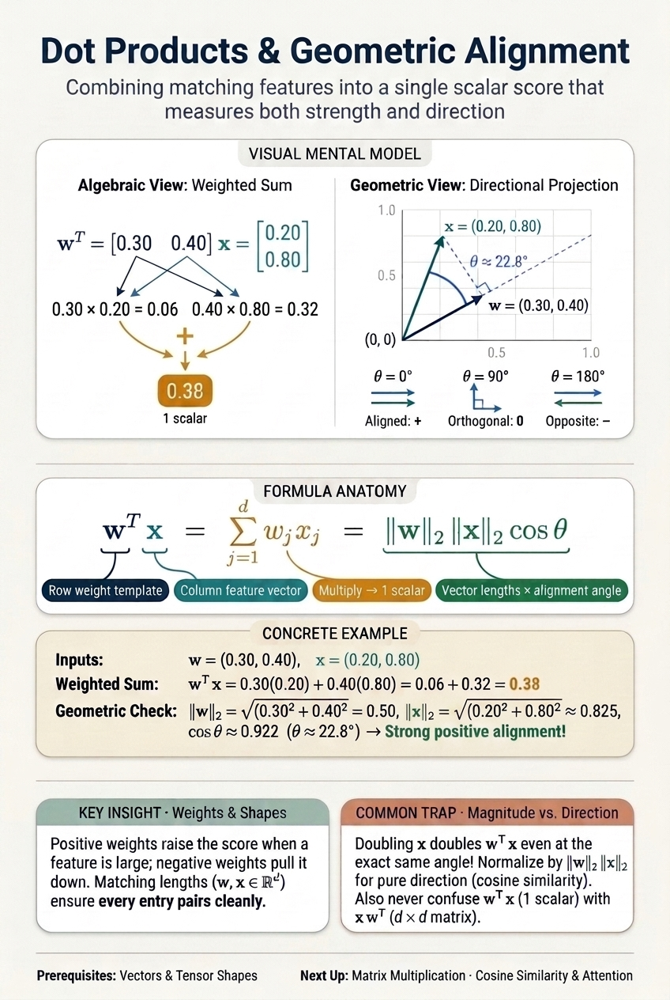
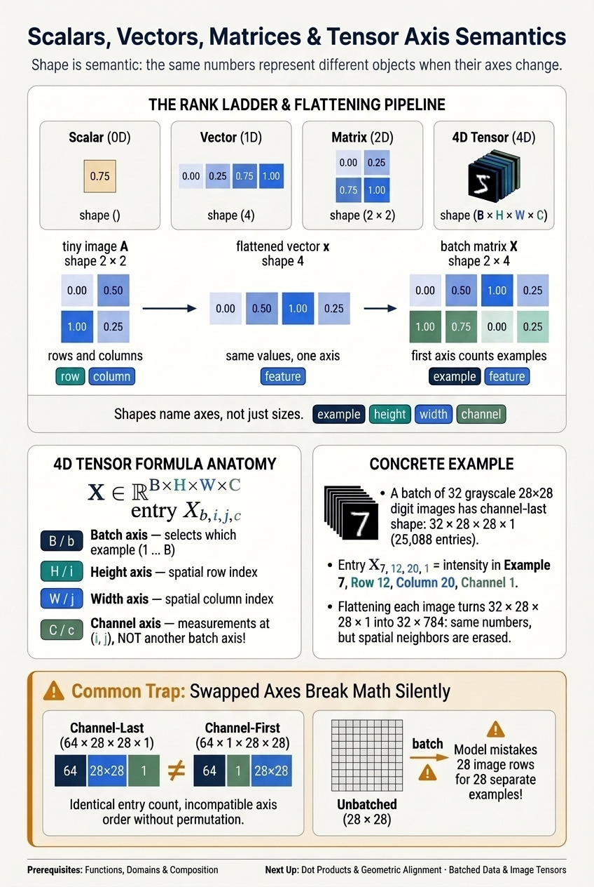
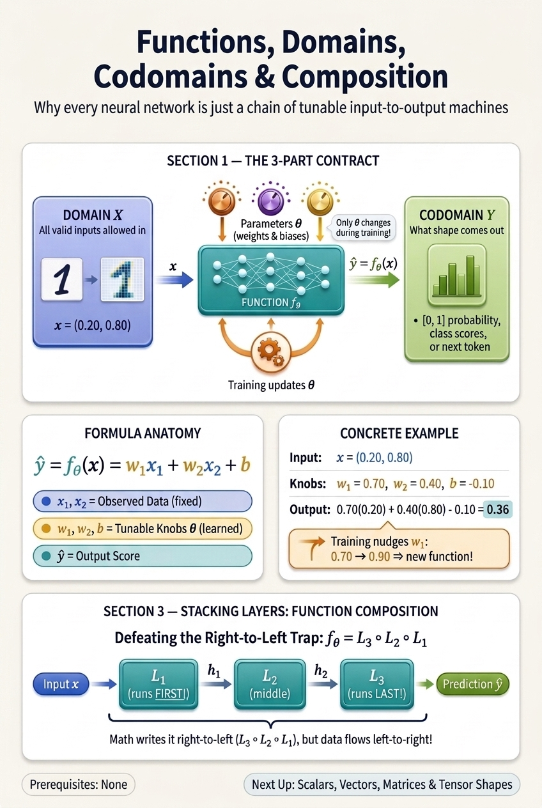

Day 03
Tier 1 · 2026-11-28


Dot Products & Geometric Alignment
Foundations & Linear Building Blocks
w^T x = sum_i w_i x_i
One core math concept a day, ordered from essential foundations to modern generative & learning theory. Every concept comes in two visual formats: a Gemma-style interactive visual guide (HTML) and a clean editorial infographic poster (JPG).
/books/math-dl-yinyang/
Source: Mathematics in Deep Learning (Yin Yang, 1st Ed.)

Foundations & Linear Building Blocks
w^T x = sum_i w_i x_i

Foundations & Linear Building Blocks
x in R^d, W in R^{m x n}, X in R^{B x C x H x W}

Foundations & Linear Building Blocks
f_theta: X -> Y, g o f
Easy to advanced — each day unlocks automatically at 6:00 AM GMT+7